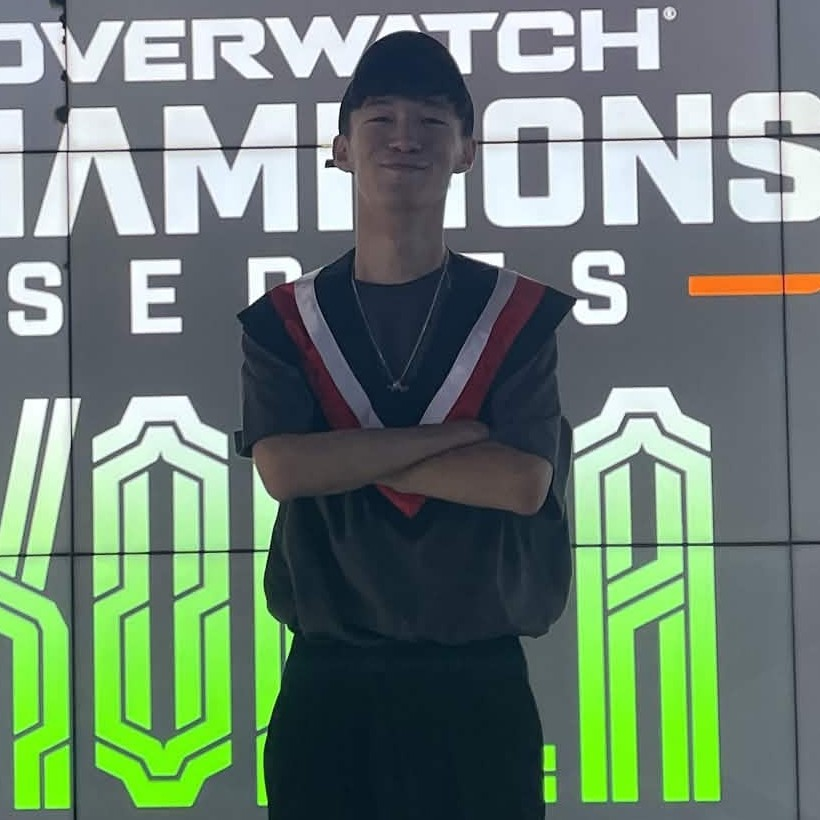
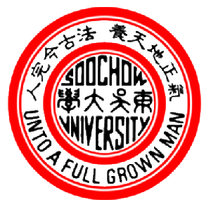

Undergraduate Student · Department of Sociology, Soochow University
I am an undergraduate student at Soochow University, majoring in Sociology with a minor in Data Science. My research centers on natural language processing (NLP) for Chinese and Korean. Coming from a sociology background, I am fascinated by how language encodes social meaning, and I see NLP as a way to model the identity, discourse, and cultural nuance embedded in text. I am especially drawn to cross-lingual and low-resource settings, since Chinese and Korean pose distinct challenges for English-centric models — an interest that is as much a genuine love of both languages as it is a research direction.

A LINE chatbot, deployed on Hugging Face Spaces, that turns K-pop chart, news, and fan-comment data into artist reports, weekly charts, quizzes, daily picks, and a personal collection. Artist reports combine Bugs charts and Naver News with five-aspect sentiment analysis of Korean YouTube comments (KcELECTRA / Gemini), precomputed offline. Its recommender matches fans' free-text preferences to members with BAAI/bge-m3, LoRA-fine-tuned on 2,267 synthetic fan queries, raising member hit@3 on 238 real fan requests from 19% (keyword baseline) to 28%; Gemini then writes reasons grounded in sourced member traits. Rule-based routing over the LINE Messaging API, with SQLite / Supabase storage and CI tests. Began as a 5-member course project in which I was the sole developer and designer (teammates produced the final report video); I built v2–v5 of the recommender independently after the competition. Code · Demo video